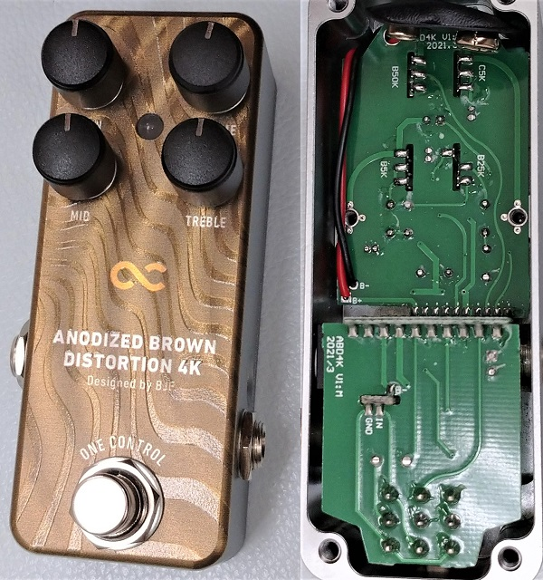
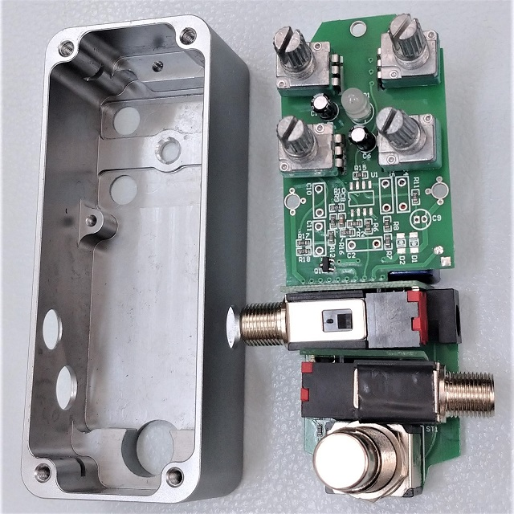
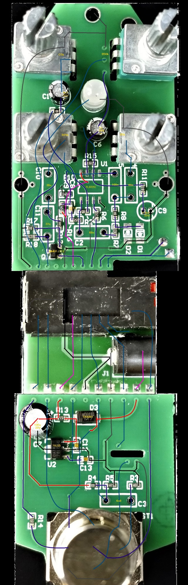
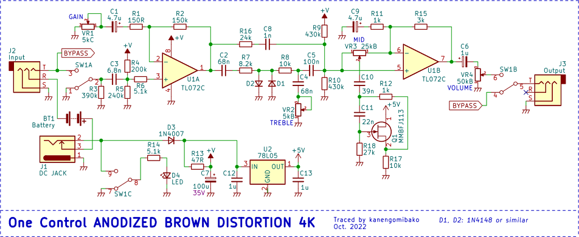
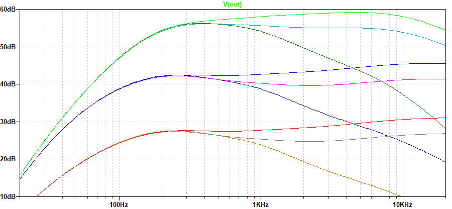
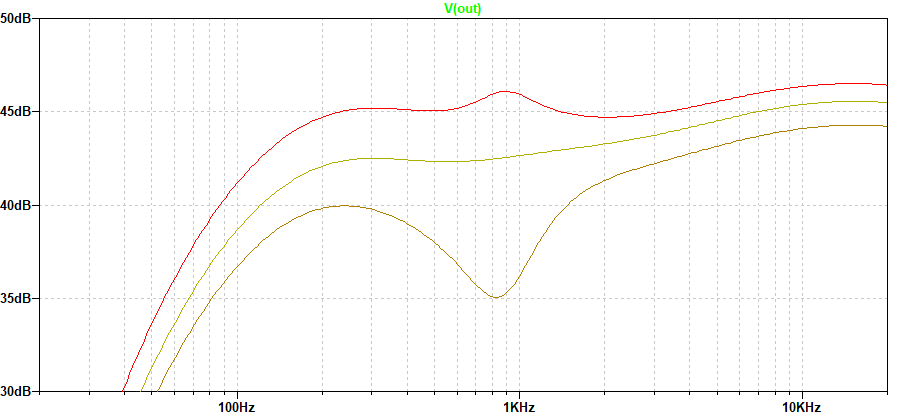

One Control ANODIZED BROWN DISTORTION 4K 解析
2022年11月26日 カテゴリー：修理・改造・解析

One Control製品の多くは、有名エフェクタービルダーBjörn Juhl（BJF）氏により回路設計されています。また、小型ケースで電池が内蔵可能になっており、以前からどのようなものか気になっていました。ANODIZED BROWN DISTORTION 4Kは2021年6月に発売された機種ですが、うまく中古で入手できたので解析することにしました。KiCadとLTspiceの回路図データ、基板画像はGitHubにあります。
▽ケース・基板画像

筐体はアルミ削り出しとなっており、段差やねじ穴部分が細かく設計されています。塗装や質感もしっかりとしており、高級感があります。内部基板は4枚から構成されていて、それぞれをねじ止めした後に半田付けで接続するという組み立て工程だと思われます。立体的な設計が複雑そうですが、配線を取り付ける必要がないので効率的です。基板同士を接続する半田パッドは、はがれにくくするためと思われるビアが打ってあります。半田を吸い取るのが簡単だったので、有鉛半田が使ってあるかもしれません。
▽回路図

入力インピーダンスが低め（公式サイトの表記：94K）となっており、発振防止の意味合いがあるかもしれません。他のBJF設計ペダルの入力インピーダンスは180kΩ～1MΩで特に統一性はないので、機種ごとに最適な値に設定してあると思われます。クリッピングはおそらく小信号用汎用ダイオードですが、R16とC8の経路があるため、オペアンプでの歪みが混ざってきます。
▽シミュレーション
- GAIN TREBLE変化 0%→50%→100%（MID 50%）

非反転増幅回路の部分は強いて言えばMXR distortion+に似ていますが、低音域のカットが少ないです。TREBLEは、ProCo RATのようにカットオフ周波数が変化するタイプではなく、高音域が全体的に増減します。
- MID変化 0%→50%→100%（GAIN 50% TREBLE 100%）

ジャイレータ（シミュレーテッドインダクタ）を使ったイコライザ回路ですが、少し全体の音量も変化します。周波数は900Hzあたりで、増減幅はあまり大きくありません。